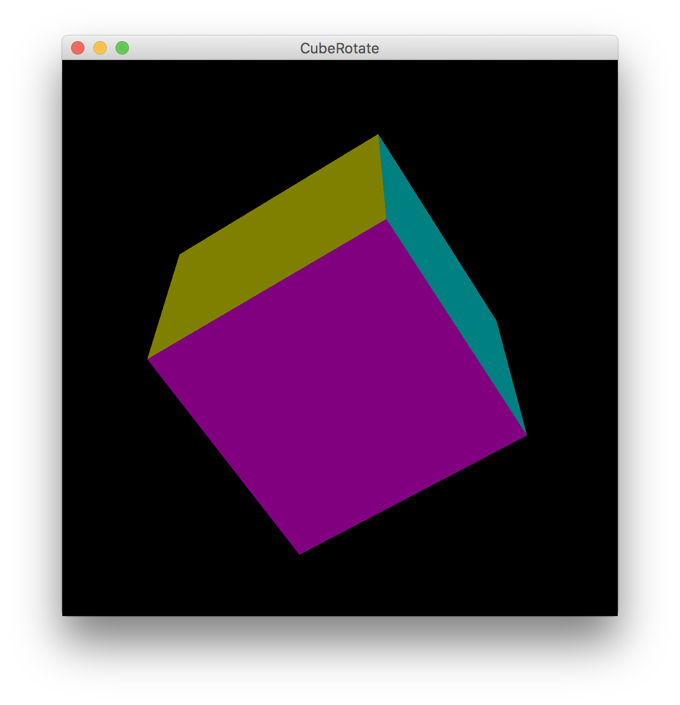
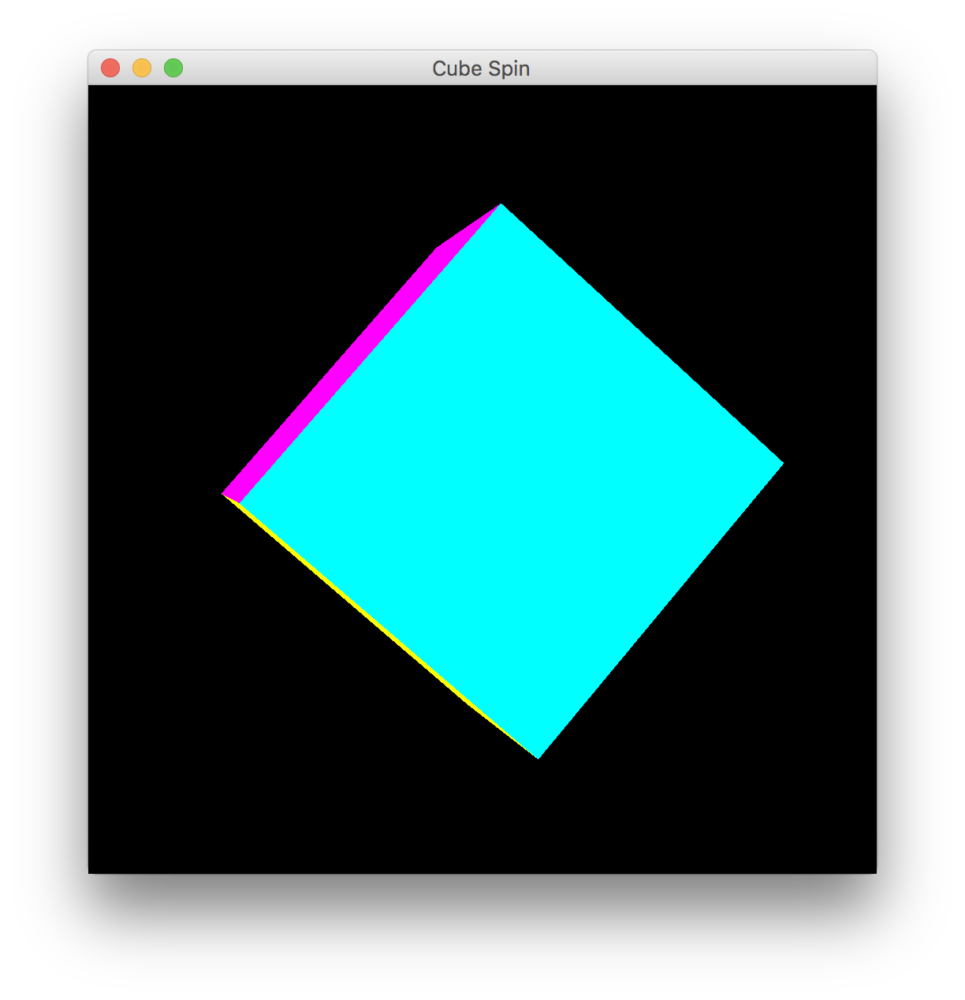
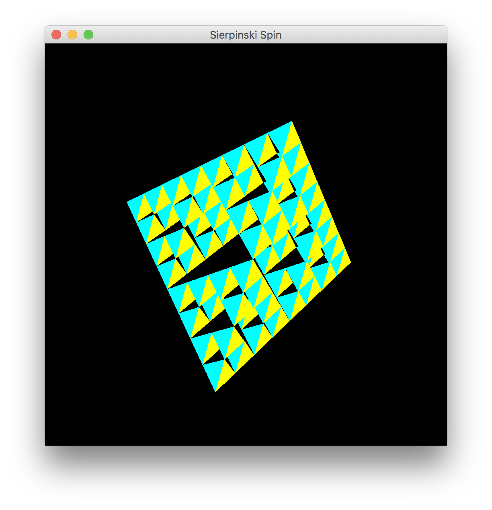

アニメーションとマウス入力 (第 10 回)
| 氏名 | 越智 秀次
|
|---|
| クラス | 理 科 一 類 11 組
|
|---|
| 学生証番号 | J4-170235
|
|---|
□課題10.1 - 13.2節 例 1: 物体の回転プログラム - ObjectRotate.java
○プログラムリスト
略
○考察
□課題10.2 - 13.2節 例 2: 立方体の回転プログラム - CubeRotate.java
○プログラムリスト
略
○実行コマンド
ochihidejinoMBP:Chap13 ochihideji$ java CubeRotate
○実行結果

○考察
□課題10.3 - 13.2節 例 3: 物体の回転アニメーション - ObjectSpin.java
○プログラムリスト
略
○考察
□課題10.4 - 13.2節 例 4: 立方体の回転アニメーション - CubeSpin.java
○プログラムリスト
略
○実行コマンド
ochihidejinoMBP:Chap13 ochihideji$ java CubeSpin
○実行結果

○考察
□課題10.5 - 章末課題: 回転速度の変更 - DumpingSpin.java / DumpingCubeSpin.java
○プログラムリスト
○実行コマンド
○実行結果

○考察
□課題10.6 - 章末課題: 回転速度の対話的な調整 - WheelSpin.java / WheelCubeSpin.java
○プログラムリスト
○実行コマンド
○実行結果
○考察
□課題10.7 - 自習課題: フラクタル立体の回転アニメーション - SierpinskiSpin.java
○プログラムリスト
public class SierpinskiSpin extends ObjectSpin {
public static void main(String[] args) {
if (args.length == 0)
System.err.println("Usage: java SierpinskiSpin #iteration");
else
(new SierpinskiSpin("Sierpinski Spin", Integer.parseInt(args[0]))).showFrame();
}
protected SierpinskiSpin(String name, int times) {
super(name);
object = new Sierpinski(times);
}
}
○実行コマンド
ochihidejinoMBP:Chap13 ochihideji$ java SierpinskiSpin 3
○実行結果

○考察
□課題や授業に関して
○レポート作成に要した時間
4時間程度
○特に苦労した点
???
○授業についての感想や希望
???